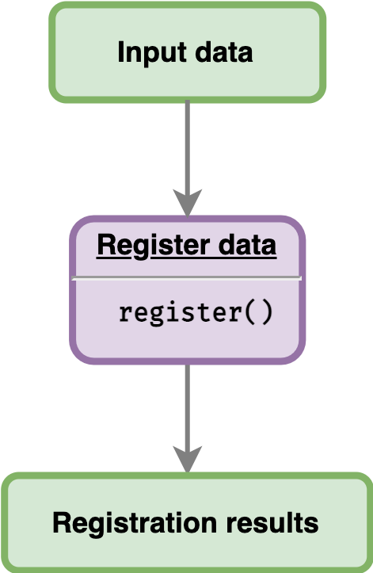

This article will show users how to register data using the sample data provided by the package. Given an input data, users can directly register the data as illustrated below.

Loading sample data
greatR package provides an example of data frame
containing two different species A. thaliana and B.
rapa with two and three different replicates, respectively. This
data frame can be read as follows:
# Load the package
library(greatR)
library(data.table)
# Load a data frame from the sample data
b_rapa_data <- system.file("extdata/brapa_arabidopsis_all_replicates.csv", package = "greatR") |>
data.table::fread()Note that the data has all of five columns required by the package:
b_rapa_data[, .SD[1:6], by = accession] |>
knitr::kable()| gene_id | accession | timepoint | expression_value | replicate |
|---|---|---|---|---|
| BRAA02G018970.3C | Ro18 | 11 | 0.3968734 | Ro18-11-a |
| BRAA02G018970.3C | Ro18 | 11 | 1.4147711 | Ro18-11-b |
| BRAA02G018970.3C | Ro18 | 11 | 0.7423984 | Ro18-11-c |
| BRAA02G018970.3C | Ro18 | 29 | 11.3007002 | Ro18-29-a |
| BRAA02G018970.3C | Ro18 | 29 | 23.2055664 | Ro18-29-b |
| BRAA02G018970.3C | Ro18 | 29 | 22.0307747 | Ro18-29-c |
| BRAA02G018970.3C | Col0 | 7 | 0.4667855 | Col0-07-a |
| BRAA02G018970.3C | Col0 | 7 | 0.0741901 | Col0-07-b |
| BRAA02G018970.3C | Col0 | 8 | 0.0000000 | Col0-08-a |
| BRAA02G018970.3C | Col0 | 8 | 0.0000000 | Col0-08-b |
| BRAA02G018970.3C | Col0 | 9 | 0.3722542 | Col0-09-a |
| BRAA02G018970.3C | Col0 | 9 | 0.0000000 | Col0-09-b |
Registering the data
To align gene expression time-course between Arabidopsis
Col-0 and B. rapa Ro18, we can use function
register(). By default, the best registration parameters
are optimised via Nelder-Mead (optimisation_method = "nm").
When using the default
optimise_registration_parameters = TRUE, the stretch and
shift search space is automatically estimated. For more details on the
other function paramaters, go to register().
registration_results <- register(
b_rapa_data,
reference = "Ro18",
query = "Col0",
scaling_method = "z-score"
)
#> ── Validating input data ────────────────────────────────────────────────────────
#> ℹ Will process 10 genes.
#>
#> ── Starting registration with optimisation ──────────────────────────────────────
#> ℹ Using Nelder-Mead method.
#> ℹ Using computed stretches and shifts search space limits.
#> ✔ Optimising registration parameters for genes (10/10) [6.7s]Registration results
The function register() returns a list of two
frames:
-
datais a data frame containing the scaled expression data and an additionaltimepoint_regcolumn which is a result of registered time points by applying the registration parameters to the query data. -
model_comparisonis a data frame containing (a) the optimal stretch and shift for eachgene_idand (b) the difference between Bayesian Information Criterion for the separate model and for the combined model (BIC_diff) after applying optimal registration parameters for each gene. If the value ofBIC_diff < 0, then expression dynamics between reference and query data can be registered (registered = TRUE).
To check whether a gene is registered or not, we can get the summary
results by accessing the model_comparison table from the
registration result.
registration_results$model_comparison |>
knitr::kable()| gene_id | stretch | shift | BIC_diff | registered |
|---|---|---|---|---|
| BRAA02G018970.3C | 3.999999 | -9.9803319 | 2.830104 | FALSE |
| BRAA02G043220.3C | 2.451715 | -0.4364747 | -3.571541 | TRUE |
| BRAA03G023790.3C | 2.250661 | 4.4018159 | -7.849086 | TRUE |
| BRAA03G051930.3C | 3.100202 | 2.1364425 | -8.096674 | TRUE |
| BRAA04G005470.3C | 3.527039 | -2.5483276 | -7.540002 | TRUE |
| BRAA05G005370.3C | 2.276239 | 3.8947552 | -7.726484 | TRUE |
| BRAA06G025360.3C | 2.383838 | 1.6557012 | -6.502890 | TRUE |
| BRAA07G030470.3C | 3.999999 | -6.0350479 | -5.450806 | TRUE |
| BRAA07G034100.3C | 3.999999 | -6.2376261 | -3.927753 | TRUE |
| BRAA09G045310.3C | 3.379824 | -1.2284081 | -7.690014 | TRUE |
From the sample data above, we can see that for all ten genes,
registered = TRUE, meaning that reference and query data
between those ten genes can be aligned or registered. These data frame
outputs can further be summarised and visualised; see the documentation
on the visualising
results article.